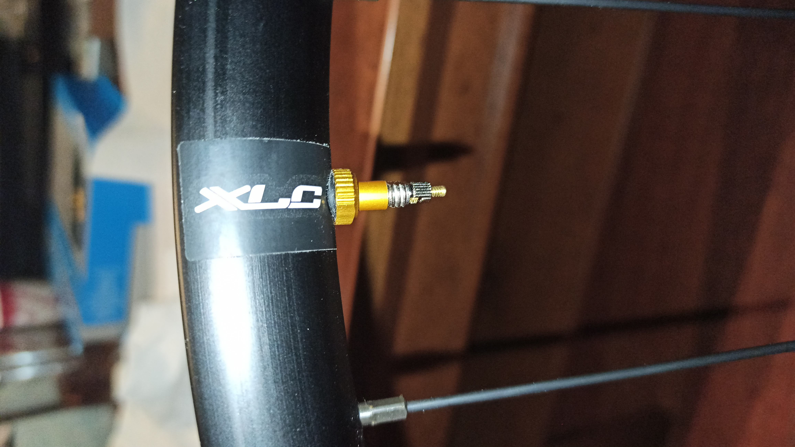

 Czas najwyższy trochę zaktualizować postęp prac nad składaniem kół, których Roch pisał w tej notce Zestaw kół do szosy i gravelu XLC WS-D01 - część pierwsza. Później pojawiła się rozkmina, czy koła dętkować, czy mlekować i ostatecznie pojawiła się ankieta. Udział w niej był liczny; jedna odpowiedź sugerowała żeby mlekować. Temu anonimu bardzo dziękuję za popchnięcie Rocha w dobrą stronę. I tak na zamówione zostały tarcze, wentyle i opaska uszczelniająca. Tarcze jedynie słuszne i w sumie jedne z niewielu dostępnych modeli. Nie licząc XTR, czy Ultegry to wszystko inne jest fest ciężko dostać od ręki. COVID faktycznie odcisnął piętno na branży rowerowej. Z tego co Roch dowiedział się w zaprzyjaźnionym sklepie rowerowym to zamówienia przychodzą jak chcą i kiedy chcą, a najczęściej to przychodzą niekompletne. Tak więc jeśli coś się opóźnia to na prawdę sklep jest najmniej winny, cały łańcuch dostaw dostał w łeb.
No i jak tam po weekendzie?
{kind=link}
Jadnak Rochowi udało się kupić tarcze, te które chciał i chyba jedyne rozsądne i jakościowo i cenowo. Tańsze Deore są tylko pod klocki mineralne, a i jakość hamowania jest gorsza, odrobinę droższe XT już są pod klocki metaliczne (+żywiczne) i można założyć, że będą dobrze hamowały. Do tego wentyle i taśma, które na stronie producenta też były wyprzedane i trzeba było ratować się na Allegro. No ale komplet jest i jest nawet zamontowany, poza tylną tarczą bo piasta ma śrubkę regulacyjną grubszą niż nakrętka center lock'a i trzeba kupić inną nakrętkę, taką pod osie 15 mm, która oznaczona jest symbolem SM-HB20, ale ta już też idzie.
Przednie koło, nie licząc opony jest gotowe. Tylne ma założoną tarczę, ale nie przykręconą i pozostaje kwestia przełożenia kasety, ale to już na sam koniec zostanie. No i opony. Opon też jeszcze Roch nie ma, ale żeby nie przedłużać to przełoży opony ze starych kół i na spokojnie ogarnie temat nowych opon tak żeby mieć dwa komplety kół. I plan ma taki, że koła XLC będą miały oponę bardziej szutrową, a oryginalny zostaw kół będzie bardziej szosowy. No chyba, że coś się jeszcze zmieni, bo to tylko pomysł, a dopiero jego realizacja pokaże, w którą stronę pójdzie Roch.
Na tę chwilę Roch czeka na nakrętkę, która przykręci się do tylnej piasty. Swoją droga te koła mają maszynowe łożyska i sprytny system regulacji luzów, przez co dołączona do tarcz nakrętka nie pasuje, ale za to można luzy kasować na założonym kole, bez konieczności wyjmowania koła z ramy, ale o tym w drugiej części, która już gdzieś tam się pisze.
W tym tygodniu czekają jeszcze Rocha ferie, te zaległe, bo otworzyli łaskawie stoki i hotele to można, korzystając z odrobiny wolności pojechać gdzieś na dłuższy weekend. A po powrocie zabieramy się za mlekowanie kół.
Roch pozdrawia Czytelników.